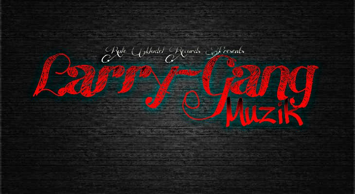

Larry-Gang Muzik Is A Locally Founded Rap/Hip-Hop Group Located On The Coast Of British Columbia, Established In 2010, By Three Young Minds (Moses, McKay/ Chris, Spencer/ Justin, Stephens) Inspired And Influenced By Their New Found Passion In Music, Demonstrating Talent In Song Writing, And Music Productions.
This Website Is Intended For Those Who Haven't Yet Heard About These Up And Coming Canadian Hip Hop Artists From First Nations Communities Throughout British Columbia, Music Productions, Song Writing, And Video Productions, As Well As A Locally Founded Clothing Line For Other Artists And Fans Of "Larry-Gang Muzik".
The Three Hip Hop Artists Founded "Larry-Gang Muzik" & "Role Model Records" In Greenville, British Columbia And Then Went On To Expand Their Range Of Talent, Inspirations, Knowledge On Traditions In The Aboriginal Communities They Grew Up In. This Website Is Intended For The Opportunity To Learn More On The Artists Affiliated Within "Larry-Gang Muzik". Updates On New Releases, New Artists, New Clothing, And Instrumentals, As Well As Up Coming Shows In The Near Future.